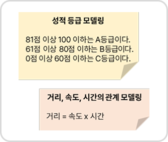
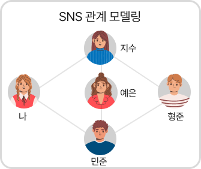

개념 학습
모델링
모델이란 복잡한 상태를 단순하게 구조적으로 표현한 결과로, 이러한 모델을 만드는 과정을
모델링이라고 한다. 컴퓨팅 시스템을 활용한 문제 해결 과정에서는 복잡한 문제에서 추출한 핵심 요소들의 관계를 구조화하여 이해하기 쉬운 형태로
표현하여 모델링한다.
모델링 표현 방법
모델링은 글이나 수식, 그림이나 그래프, 표 등 다양한 방식으로 구조화할 수 있다.
글이나 수식으로 구조화

• 성적 등급 기준을 글로 구조화
• 거리, 속도, 시간의 관계를 수식으로
구조화
• 거리, 속도, 시간의 관계를 수식으로
구조화
그림이나 그래프로 구조화

친구 맺은 사용자들을 선으로 연결하여 그래프로 구조화
표로 구조화
SNS 관계 모델링
* 직접 연결되면 1, 아니면 0을 표시| 나 | 형준 | 지수 | 민준 | 예은 | |
|---|---|---|---|---|---|
| 나 | 0 | 1 | 1 | 0 | |
| 형준 | 0 | 1 | 1 | 0 | |
| 지수 | 1 | 1 | 0 | 1 | |
| 민준 | 1 | 1 | 0 | 1 | |
| 예은 | 0 | 0 | 1 | 1 |
친구 관계이면 1, 아니면 0으로 표현
하여 표로 구조화
하여 표로 구조화